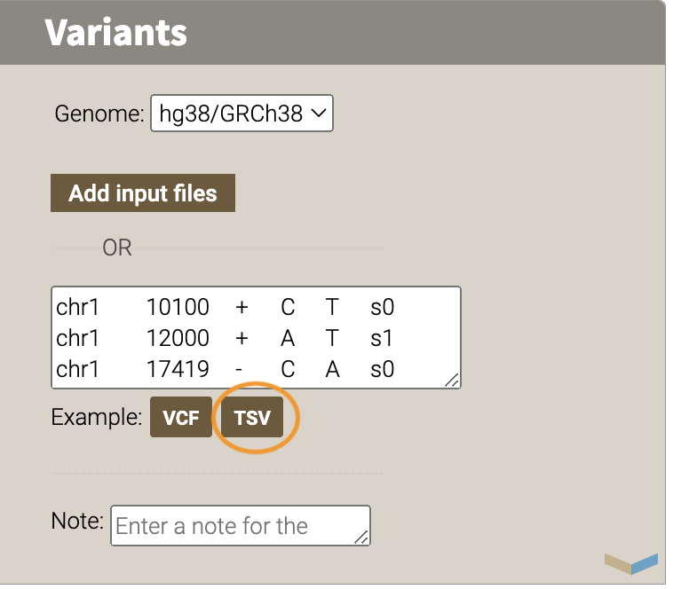
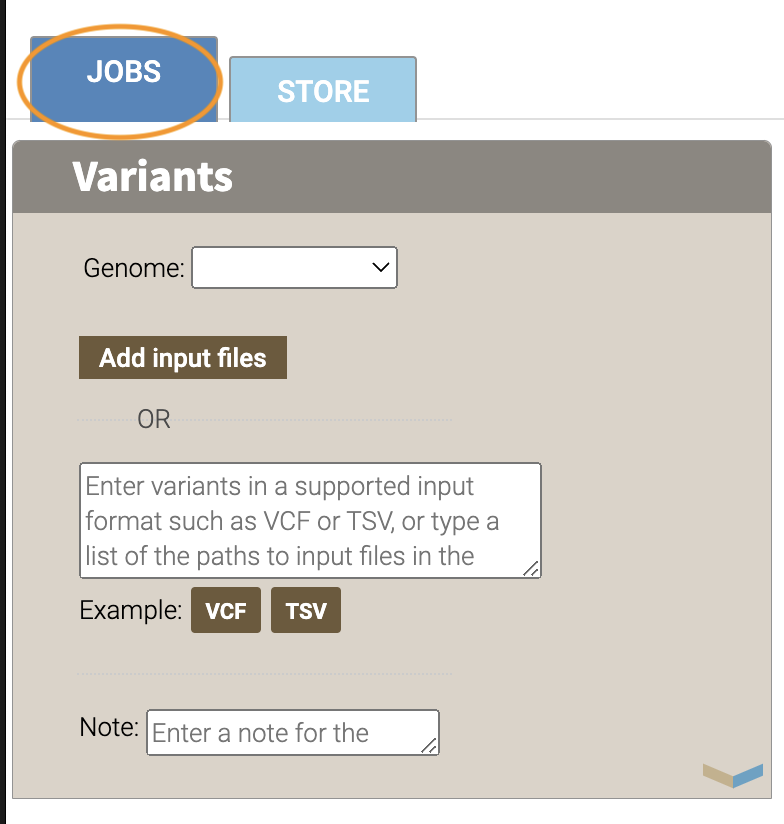

Getting Started (Website/GUI)¶
Learning Objectives¶
By the end of this tutorial, you should be able to:
Create as user account on the OpenCRAVAT site
Install OpenCravat locally using an installer
Search for available annotators on the open cravat site
Upload and annotate variant files on the site
Filter annotated results for visualization
Visualize and Summarize Results in OpenCRAVAT
Export and Share annotation results with othersls
Understanding the Context for our Task¶
Let’s start with a research question we’re interested in. We have a list of variants that we’ve found in our patient population of interest. Our research question is:
Given this list of variants, which are potentially pathogenic?
This research question will take us through understanding how the OpenCRAVAT annotator works.
To start, you can either install OpenCRAVAT locally, or create an account on the website. Then you’ll follow the paths below. Here’s a comparison of both approaches:
Feature |
OpenCRAVAT Web |
OpenCRAVAT Local |
|---|---|---|
Create Account |
Yes on Web |
Not required |
Install Annotators |
Pre-installed |
Install in Store |
Scriptable |
No |
Yes |
Protected Data |
No |
Yes, with appropriate protections |
Most importantly, if you are using protected data, you should go the local installer route, with appropriate protections on your machine.
You can click on each box in the diagram below to go to the relevant section. We’ll have an appropriate callout to highlight the differences where the two approaches differ.
Creating an OpenCRAVAT Account (Web)¶
Let’s start out by creating an account on https://run.opencravat.org. If your organization is running OpenCRAVAT locally, you will need to find out the appropriate URL for the instance of OpenCravat.
Here’s the initial screen we’ll see when we go to https://run.opencravat.org. You’ll click on the Sign Up Button to create an account.
 Enter your details in the form, and sign up. You’ll
automatically be signed into the interface and will be ready to go for
the next step.
Enter your details in the form, and sign up. You’ll
automatically be signed into the interface and will be ready to go for
the next step.

Now you’re ready to browse the OpenCRAVAT Store to look for annotators.
Installing OpenCRAVAT via Installer (Local)¶
You can install OpenCRAVAT via the installers below:
Windows¶
Windows Defender may indicate that it prevented an unknown application from running. If so, click the ‘More’ link on the message and then select ‘Run Anyway’. An “OpenCRAVAT” icon will be created on the Desktop and the Start Menu.
MacOS¶
Right-click the downloaded file and select “Open”. Your Mac may ask you to confirm stating that the file was not downloaded from the App Store. Click “Open” button. Just double-clicking the installer may not enable this “Open” option.
Linux¶
Linux Users should refer to the Command Line Quickstart to install via
pip/pip3.
Start OpenCRAVAT GUI¶
Now that OpenCRAVAT is installed, we can run the GUI. In a command prompt (PowerShell or Terminal), you can start the OpenCRAVAT GUI by typing:
oc gui
In MacOS, you can also launch OpenCRAVAT via clicking on the application in your Applications folder. In Windows, you can click the desktop Icon to launch it.
You should see the following in your terminal:
tedladeras@teds-MacBook-Pro ~ % oc gui
____ __________ ___ _ _____ ______
/ __ \____ ___ ____ / ____/ __ \/ | | / / |/_ __/
/ / / / __ \/ _ \/ __ \/ / / /_/ / /| | | / / /| | / /
/ /_/ / /_/ / __/ / / / /___/ _, _/ ___ | |/ / ___ |/ /
\____/ .___/\___/_/ /_/\____/_/ |_/_/ |_|___/_/ |_/_/
/_/
OpenCRAVAT is served at localhost:8080
(To quit: Press Ctrl-C or Ctrl-Break if run on a Terminal or Windows, or click "Cancel" and then "Quit" if run through OpenCRAVAT app on Mac OS)
(Getting result of [example_input.sqlite]:[variant]...)
Done getting result of [example_input.sqlite][variant] in 0.029s
(Getting result of [example_input.sqlite]:[gene]...)
Done getting result of [example_input.sqlite][gene] in 0.021s
A window should open in your web browser. If not, enter https://localhost:8080 to view the GUI.
Now you can browse and install the available annotators
Browse Annotators (Web)¶
If we click on the STORE tab in the top left of the interface, we’ll see the variety of annotators that are available to us.

Let’s browse the clinically relevant annotators by clicking on the
Clinically Relevant checkbox:
As we browse the annotators available to us, we notice two specific annotators we want to work with. Let’s use two clinically relevant annotators: CiViC (Clinical Interpretations of Variants in Cancer) and ClinVar, a public archive of interpretations of clinically relevant patients.
To get more information, click on the CiViC box:
 And you’ll see more information about the annotator:
And you’ll see more information about the annotator:

Note
For Local Users
If you have installed OpenCRAVAT locally, you will have the option to install annotators on the store page. You can do this by clicking “Install” for the annotator of interest. Please note that some of the annotators use a lot of disk space, so keep that in mind before installing locally.

You already have CiViC and ClinVar installed by default, so you don’t need to install them locally.
Now we know which annotators we want to use, let’s review input file formats.
Convert to Input File Format¶
OpenCRAVAT supports VCF files for input, but also has a simplified format to be used for input files.
We’ll use an example and annotate it. Let’s take a look at the first few lines of this file to understand the input format. This example is available by clicking the “TSV” button next to “example”:

chr1 69091 + A C s0
chr1 69091 + ATG C s0
chr6 31039077 + C G s0
chr1 27612918 + G a s1
chr1 27612918 + G A s0
chrM 235 + A G clinvar
chrM 3308 + T C omim
chr8 54626835 + A T s0
chr4 1804372 + A G s1
chr4 1804372 + AT GC s1
chr4 1804372 + A T s1
chr1 369551 + G C s0
chr10 121593817 - A T s0
chr10 2987654 + T A s1
This format contains the following columns: chromosome,
position, strand, reference, allele, and sample.
Much more information about the supported file formats are here: File Formats.
Now we have our input file, we can move on to submitting our job.
Submit Annotation Job¶
Before we move on, let’s take a look at the overall workflow for annotating in the GUI. We’ll start out by 1) submitting our input file, 2) selecting the annotators, and then 3) submitting our job.

Let’s start the workflow. We can now add our variant file to annotate and submit a job. Select the
JOBStab in the top left corner of the interface.

Our example file corresponds to the hg19/GRCH37 build, so make sure
that this genome is selected under the Genome field

Now we’ll add our input file. Add your variant file here by clicking the “ADD INPUT FILES” button. If you are using the built in example, you won’t need to add it.

Now we can select our annotators. Under annotations in the box below “Variants”, click on the “Clinical Relevance” category.

Select the CiViC (not CiViC Gene) and ClinVar annotation
checkboxes.

Now we’re ready to annotate. Click the ANNOTATE button at the bottom of the webpage. Now you’ve submitted your job.

Depending on the size of your Variant file, it may take time for your job to finish. You’ll see the job running in the table on the right of the interface.
When our job is finished, we can view our results and filter them.
Filter Results¶
Now we take a look at our results in the web interface. Under the list
of jobs, we can see our job. Let’s select Open Result Viewer under
the Status tab:
 Keep in mind that the web interface is limited to visualizing
100,000 variants, so if you have a larger result file, you’ll need to
filter the results down. So let’s take a look at how to filter our
variants down.
Keep in mind that the web interface is limited to visualizing
100,000 variants, so if you have a larger result file, you’ll need to
filter the results down. So let’s take a look at how to filter our
variants down.
We can filter variants by selecting the Filter tab in the Results viewer:

Under “Variant Properties” we can limit our list of variants to those that have ClinVar annotations. Let’s build a filter using the Query Builder, which will allow us to impose multiple criteria as a filter.

We’ll add a rule (a logical condition) to our filter using the +
button:

Now we’ll add a rule and select those that have ClinVar annotations.
To do this, we’ll first select a) ClinVar on the left, the b)
Clinical Significance column, and c) has data:
 Now we can apply this rule we’ve built by clicking on the
Apply Filter button on the bottom right of the Query Builder:
Now we can apply this rule we’ve built by clicking on the
Apply Filter button on the bottom right of the Query Builder:
 How many variants are left after the filtering?
How many variants are left after the filtering?
Note
Calculating the Effect of Filters
If you have multiple filters, you can actually precalculate the numbers of variants after filtering by using the icon below.

This can be helpful to check if your filters are too strict (that is, they won’t return anything).
Just note that the filter is not actually applied to the data until you hit the Apply Filter Button.
Visualize Filtered Results¶
Now that we’ve filtered, let’s go back to the Summary Tab:
 In the Summary tab, we can see information about the annotated
variants, such as from the sequence ontology. We can get the counts
within a sequence ontology category by mousing over that category in our
plot:
In the Summary tab, we can see information about the annotated
variants, such as from the sequence ontology. We can get the counts
within a sequence ontology category by mousing over that category in our
plot:
 These visualizations can be moved around and pinned. Using the
camera icon, you can also save these visualizations.
These visualizations can be moved around and pinned. Using the
camera icon, you can also save these visualizations.
Let’s move over to the Variant tab and look for pathogenic variants. First, we’ll click over to the Variant tab:
 Scrolling to the right, we can see there is a column for the
ClinVar annotations. Notice the + on the top right. We’ll click that
to expand the ClinVar annotations:
Scrolling to the right, we can see there is a column for the
ClinVar annotations. Notice the + on the top right. We’ll click that
to expand the ClinVar annotations:
 In the Clinical Significance column, we can see that we
can filter. Let’s select those variants that have pathogenic
significance. Clicking into the search box underneath this column, we
can select pathogenic:
In the Clinical Significance column, we can see that we
can filter. Let’s select those variants that have pathogenic
significance. Clicking into the search box underneath this column, we
can select pathogenic:

How many variants are pathogenic?
The last thing we might want to do is to export our results. We can use the export button at the bottom of the table:

When you click that, you will have the option to export the variant level results as a tab seperated value (TSV) file. Note that this result table will have filters applied to it as well.
Note
Multiple Rules
Note that we could have limited our search to pathogenic variants
by adding another filter rule like we did above in the filtering
step. We’re showing this way in case you didn’t know the available
categories within the Clinical Significance column.
What you learned¶
You learned a lot in this section. You learned how to:
Create a User Account
Browse OpenCRAVAT’s store to look for annotators
Submit a job to the Open-Cravat server
Filter results in the Results Viewer
Visualize results in the Results Viewer